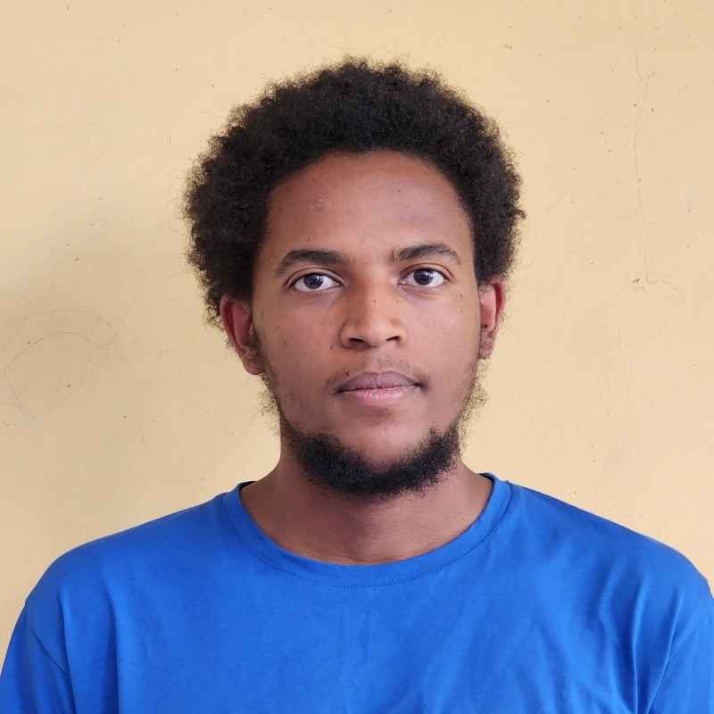

Biniyam Negasa
About me
I'm Biniyam Negasa, a versatile Software Engineer experienced in building diverse applications ranging from full-stack web platforms to interactive games and command-line tools. My project work demonstrates proficiency in both backend development with Ruby on Rails and modern frontend development using React, JavaScript, HTML, and CSS. I have hands-on experience creating engaging user experiences, implementing game logic, integrating with APIs, and utilizing frameworks like Next.js for performant web applications.